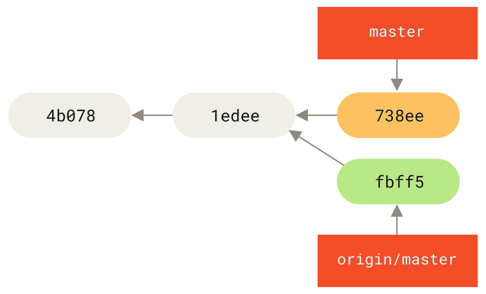
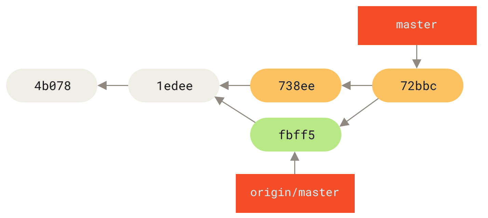
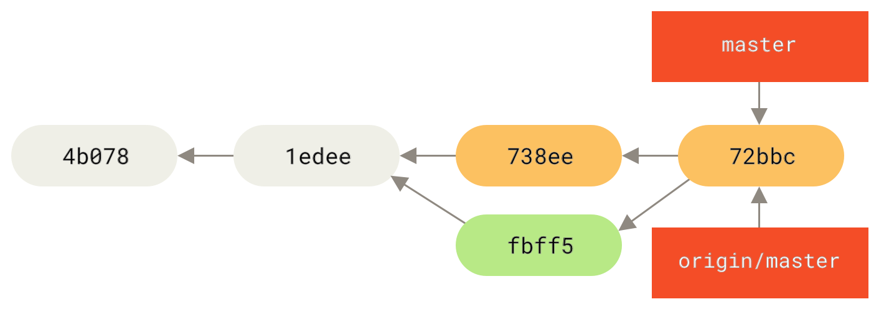
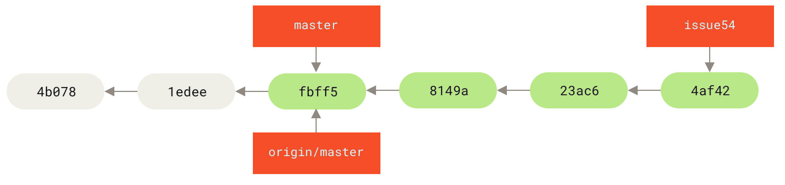
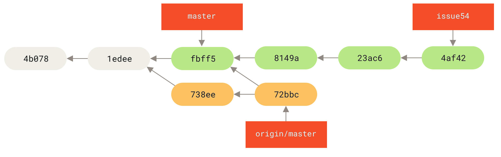
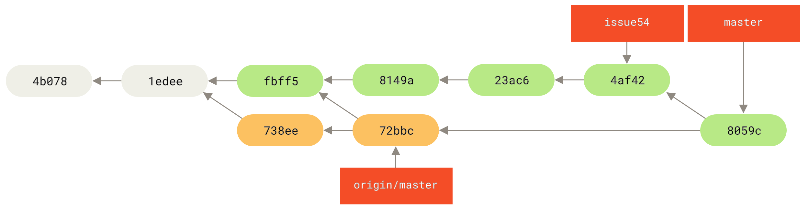
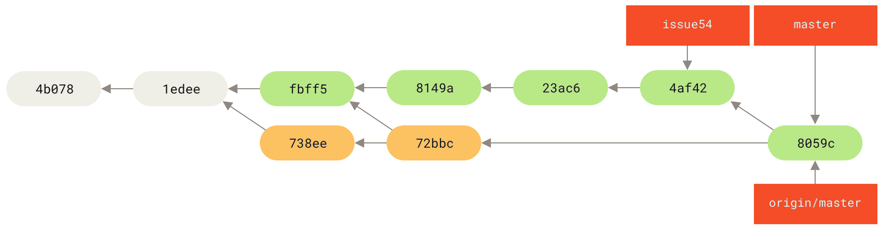
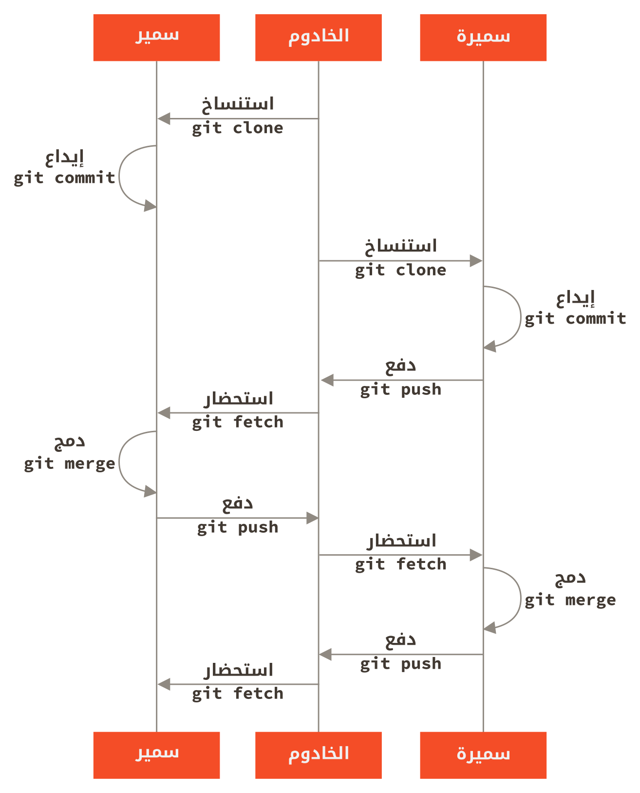

٥، ٤، المساهمة في مشروع
— فريق خصوصي صغير
أصغر شكل مشروع قد تقابله هو مشروع خصوصي له مطور واحد آخر أو مطوران. «خصوصي» في هذا السياق تعني مغلق المصدر، أي ليس متاحًا لعموم الناس. لديك أنت والمطورين الآخرين إذن الدفع إلى المستودع.
يمكنك في هذا اتباع أسلوب يشبه ما قد تتبعه مع Subversion أو نظام مركزي آخر.
وستنتفع بمزايا مثل الإيداع بغير اتصال بالشابكة، والتفريع والدمج الأسهلان كثيرًا. لكن أسلوب التطوير متطابق تقريبًا؛ ليس أكبر اختلاف إلا أن الدمج يحدث في المستودعات المحلية وليس في الخادوم عند الإيداع.
لنرَ كيف يبدو عندما يعمل مطوران معًا في مستودع مشترك.
سمير، المطور الأول، استنسخ المستودع وعدّل فيه وأودع محليًّا.
اختصرنا الرسميّات التي في الرسائل إلى ....
# حاسوب سمير
$ git clone samir@githost:simplegit.git
Cloning into 'simplegit'...
...
$ cd simplegit/
$ vim lib/simplegit.rb
$ git commit -am 'Remove invalid default value'
[master 738ee87] Remove invalid default value
1 files changed, 1 insertions(+), 1 deletions(-)وسميرة، المطورة الأخرى في المشروع، فعلت الشيء نفسه: استنسخت المستودع وعدّلت فيه وأودعت محليًّا:
# حاسوب سميرة
$ git clone sameera@githost:simplegit.git
Cloning into 'simplegit'...
...
$ cd simplegit/
$ vim TODO
$ git commit -am 'Add reset task'
[master fbff5bc] Add reset task
1 files changed, 1 insertions(+), 0 deletions(-)ثم دفعت سميرة بعملها إلى الخادوم، فقبله على الرحب والسعة:
# حاسوب سميرة
$ git push origin master
...
To sameera@githost:simplegit.git
1edee6b..fbff5bc master -> masterيُظهر السطر الأخير رسالة مفيدة من عملية الدفع.
وصيغتها «شِر-قديم»..«شِر-جديد» «شِر-أصل» -> «شِر-هدف»، حيث «شِر-قديم» هي الإشارة (“reference”) القديمة، و«شِر-جديد» هي الإشارة الجديدة، و«شِر-أصل» هي اسم الإشارة المحلية المدفوعة إلى الخادوم، و«شِر-هدف» هي اسم الإشارة التي على الخادوم ويُراد تحديثها.
سترى مثل هذا الناتج في الشرح التالي، فالمعرفة اليسيرة بمعناه ستفيدك في فهم الحالات المختلفة للمستودعات.
وللاستزادة، انظر توثيق أمر الدفع git-push.
لنكمل مثالنا. بعد ما حدث بقليل، عدّل سمير في المستودع وأودع تعديلاته في مستودعه المحلي، وحاول دفعها إلى الخادوم نفسه:
# حاسوب سمير
$ git push origin master
To samir@githost:simplegit.git
! [rejected] master -> master (non-fast forward)
error: failed to push some refs to 'samir@githost:simplegit.git'في هذه الحالة، فشل دفع سمير بسبب دفع سميرة السابق لتعديلاتها.
هذا مهم جدًا فهمه خصوصًا إذا كنت معتادًا على Subversion، لأنك تلاحظ أنهما لم يعدّلا في الملف نفسه.
فإنْ عدّلت ملفات مختلفة فإنّ Subversion سيدمجها لك آليًّا على الخادوم، لكن مع جت يجب عليك أولًا دمج الإيداعات محليًّا.
بلفظ آخر: يجب على سمير أن يستحضر (fetch) تعديلات سميرة من المستودع المنبع ويدمجها في مستودعه المحلي قبل أن يُسمح له بالدفع.
فخطوة سمير الأولى هي استحضار عمل سميرة (وهذا فقط يستحضر عملها من المستودع المنبع، لكن لا يدمجه في عمله):
$ git fetch origin
...
From samir@githost:simplegit
+ 049d078...fbff5bc master -> origin/masterعندئذٍ يبدو مستودع سمير المحلي هكذا:

يستطيع سمير الآن أن يدمج في مستودعه المحلي عملَ سميرة الذي استحضره.
$ git merge origin/master
Merge made by the 'recursive' strategy.
TODO | 1 +
1 files changed, 1 insertions(+), 0 deletions(-)ما دام هذا الدمج المحلي قد تم بسلام، فسيبدو التاريخ الجديد عند سمير هكذا:

origin/masterعندئذٍ قد يودّ سمير أن يجرب هذا المصدر البرمجي الجديد ليطمئن أن لا شيء من عمل سميرة قد أثّر على عمله. فإذا بدا كل شيء بخير، فيمكنه أخيرًا أن يدفع هذا العمل المدموج إلى الخادوم:
$ git push origin master
...
To samir@githost:simplegit.git
fbff5bc..72bbc59 master -> masterوفي النهاية، سيبدو تاريخ إيداعات سمير هكذا:

originوفي هذه الأثناء أنشأت سميرة فرع موضوع جديد وسمّته issue54 وأودعت فيه ثلاثة إيداعات.
ولم تستحضر تعديلات سمير بعد. فيبدو تاريخ إيداعاتها هكذا:

وفجأةً علمت سميرة بخبر دفع سمير إيداعاتٍ إلى الخادوم، وتريد أن تنظر فيها، فاستحضرت ما لدى الخادوم من جديد:
# حاسوب سميرة
$ git fetch origin
...
From sameera@githost:simplegit
fbff5bc..72bbc59 master -> origin/masterهذا يجذب العمل الذي دفعه سمير في هذه الأثناء، فصار التاريخ عند سميرة هكذا:

ثم رأت سميرة أن فرع موضوعها قد صار جاهزًا، لكنها أرادت أن ترى أيَّ جزء من عمل سمير الذي استحضرته، يجب عليها دمجه في عملها حتى تستطيع الدفع. فاستعملت أمر السجل:
$ git log --no-merges issue54..origin/master
commit 738ee872852dfaa9d6634e0dea7a324040193016
Author: Samir Samara <samsam@example.com>
Date: Fri May 29 16:01:27 2009 -0700
Remove invalid default valueالصيغة issue54..origin/master هي «مصفاة سجل» تسأل جت أن يعرض فقط الإيداعات التي في الفرع الآخر (origin/master هنا) وليست في الفرع الأول (issue54 هنا).
سنفصّل هذه الصيغة في فصل نطاقات الإيداعات.
من هذا الناتج، نرى أن إيداعًا واحدًا فقط صنعه سمير ولم يُدمج بعد في المستودع المحلي عند سميرة.
فعندما تدمج سميرة origin/master فإن هذا الإيداع وحده الذي سيُغيّر مستودعها المحلي.
تستطيع سميرة الآن أن تدمج فرع الموضوع في فرعها الرئيس ثم تدمج عمل سمير (origin/master) في فرعها الرئيس، ثم تدفع هذا العمل المدموج إلى الخادوم.
فأولا، بعد أن أودعت سميرة كل عملها في فرع الموضوع issue54، انتقلت إلى فرعها الرئيس استعدادًا لدمج كل هذا:
$ git checkout master
Switched to branch 'master'
Your branch is behind 'origin/master' by 2 commits, and can be fast-forwarded.تستطيع سميرة الآن أن تدمج أيَّ الفرعين أولًا (origin/master أو issue54)؛ كلاهما «منبع»، فلا يهم الترتيب.
ولقطة المشروع في آخر المطاف ستتطابق في الحالين؛ لن يختلف سوى شكل التاريخ.
فاختارت دمج فرع issue54 أولًا:
$ git merge issue54
Updating fbff5bc..4af4298
Fast forward
README | 1 +
lib/simplegit.rb | 6 +++++-
2 files changed, 6 insertions(+), 1 deletions(-)لم تظهر مشكلة؛ إنما كان دمج تسريع كما رأيت.
فأكملت سميرة الدمج المحلي بدمج عمل سمير التي استحضرته من قبل وبقى في فرع origin/master:
$ git merge origin/master
Auto-merging lib/simplegit.rb
Merge made by the 'recursive' strategy.
lib/simplegit.rb | 2 +-
1 files changed, 1 insertions(+), 1 deletions(-)دُمِج كل شيء بنظافة، وصار التاريخ عند سميرة هكذا:

صار الآن origin/master موصولًا بفرع master الخاص بسميرة، فتستطيع الآن دفعه بسلام (بفرض أن سمير لم يدفع إيداعات أخرى جديدة في هذه الأثناء):
$ git push origin master
...
To sameera@githost:simplegit.git
72bbc59..8059c15 master -> masterكلٌّ منهما أودع عدة مرات ودمج عمل الآخر بسلام.

هذا من أسهل أساليب التطوير: فإنك تعمل قليلًا (غالبًا في فرع موضوع)، ثم تدمج عملك في فرعك الرئيس عندما يكون جاهزًا. وعندما تريد مشاركته فإنك تستحضر الفرع الرئيس المنبع وتدمج ما فيه (إذا تغيّر) في فرعك الرئيس المحلي، وأخيرًا تدفع هذا إلى الفرع الرئيس المنبع. ويكون الشكل العام لتسلسل الأحداث هكذا:
